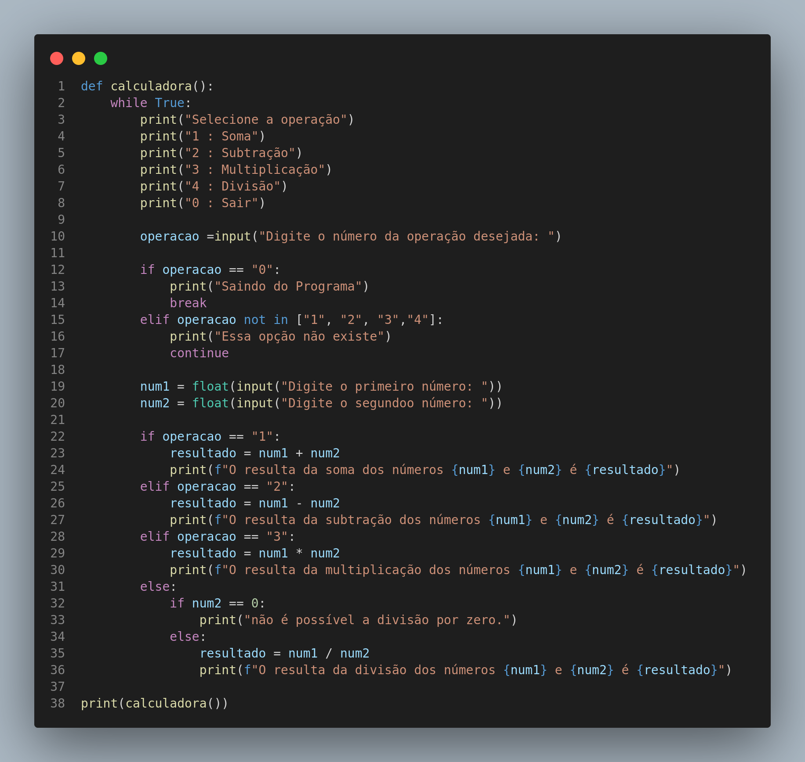

Instruções do projeto - Lógica Imperativa
Atividade 08 - Calculadora
Nome: Jonathan P P Maia
Faça uma função calculadora de dois números com três parâmetros: os dois primeiros serão os números da operação e o terceiro será a entrada que definirá a operação a ser executada. Considera a seguinte definição:
1. Soma
2. Subtração
3. Multiplicação
4. Divisão
Caso seja inserido um número de operação que não exista, o resultado deverá ser 0.
RESOLUÇÃO01
